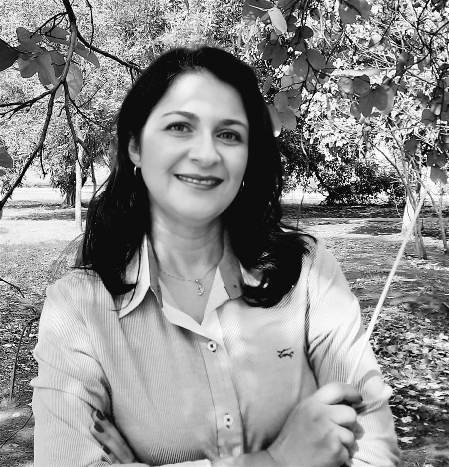
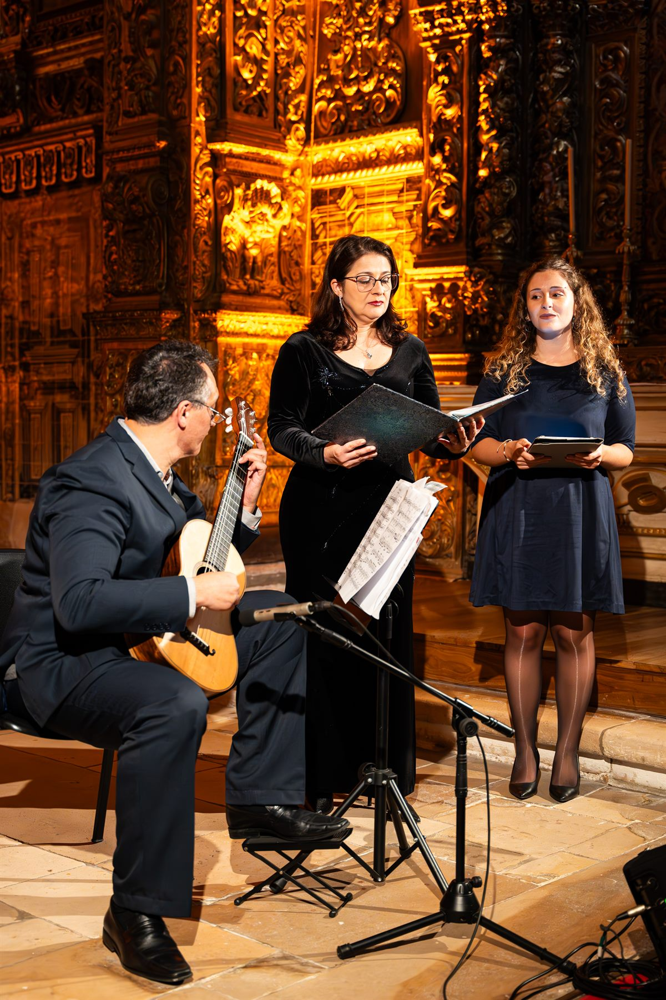

Canto · regência
Ana Lúcia Gaborim
Soprano, regente e professora. Estuda canto há muitos anos com a soprano Adelia Issa e ensina, na UFMS, aquilo que a maioria dos músicos aprende tarde: como a voz funciona por dentro.
É doutora em Música pela Universidade de São Paulo (2015), mestra em Música (2005) e bacharela em Composição e Regência (2000) pela Universidade Estadual Paulista. Desde 2006 é professora efetiva do curso de Licenciatura em Música da Universidade Federal de Mato Grosso do Sul, nas áreas de Regência, Canto Coral, Fisiologia e Técnica Vocal.
Integra ainda o corpo docente do mestrado profissional PROF-ARTES e do curso de Especialização em Regência da UFBA, e é convidada com frequência a lecionar Regência em festivais de música, encontros de coros e nos Painéis de Regência Coral da FUNARTE.
Fora da sala de aula, coordena três projetos de extensão que colocam gente para cantar: o CanteMus — Laboratório da Voz, o PCIU! — Projeto Coral Infantojuvenil da UFMS — e o Paraná Canta, que leva coros a escolas públicas em parceria com a Secretaria de Educação do Paraná e quatro universidades públicas.
Presidiu a ABRACO — Associação Brasileira de Regentes de Coros — na gestão 2021-2024, é representante estadual da ABEM e membro fundador da AFLAMS, a Academia Feminina de Letras e Artes de Mato Grosso do Sul. Tem artigos publicados em periódicos, livros e congressos no Brasil e no exterior.
Frentes de trabalho
Cantar, reger e ensinar a reger.
-
UFMS · desde 2006
Ensino
Regência, Canto Coral, Fisiologia e Técnica Vocal na Licenciatura em Música. Também no PROF-ARTES e na Especialização em Regência da UFBA.
-
Extensão
CanteMus, PCIU! e Paraná Canta
Laboratório da voz, coral infantojuvenil e coros em escolas públicas, este último em parceria com quatro universidades e a Secretaria de Educação do Paraná.
-
2021 – 2024
Presidência da ABRACO
Associação Brasileira de Regentes de Coros. É também representante estadual da ABEM e membro fundador da AFLAMS.
-
Pesquisa
Artigos e congressos
Publicações em periódicos, livros e congressos nacionais e internacionais, sobretudo em regência coral e técnica vocal.

Títulos
- Embaixadora da paz — Cercle Universel des Ambassadeurs de la Paix
- Embaixadora da paz — IFLAC World
Currículo
Ana Lúcia Iara Gaborim Moreira
Formação, docência, projetos de extensão, entidades e títulos. A versão oficial e completa está na Plataforma Lattes do CNPq.
Formação
Titulação acadêmica e estudos de canto.
-
2015 · Doutorado
Doutora em Música
Universidade de São Paulo (USP).
-
2005 · Mestrado
Mestra em Música
Universidade Estadual Paulista (UNESP).
-
2000 · Graduação
Bacharela em Composição e Regência
Universidade Estadual Paulista (UNESP).
-
Canto
Estudos particulares com a soprano Adelia Issa
Formação continuada em canto lírico, mantida há muitos anos.
Docência
Onde ensina e o que ensina.
-
Desde 2006
Professora efetiva — Licenciatura em Música, UFMS
Regência, Canto Coral, Fisiologia e Técnica Vocal. E-mail institucional: ana.gaborim@ufms.br
-
PROF-ARTES
Corpo docente do mestrado profissional em Artes
Programa em rede nacional.
-
UFBA
Corpo docente da Especialização em Regência
Universidade Federal da Bahia.
-
Convites
Regência em festivais e encontros de coros
Inclusive nos Painéis de Regência Coral da FUNARTE.
Projetos de extensão
Coordenação de programas que colocam gente para cantar.
-
UFMS
CanteMus — Laboratório da Voz
Estudo e prática da voz cantada.
-
UFMS
PCIU! — Projeto Coral Infantojuvenil da UFMS
Formação coral de crianças e adolescentes.
-
Paraná
Paraná Canta
Coros em escolas públicas, em parceria com a Secretaria de Educação do Paraná e quatro universidades públicas.
Entidades e representação
-
2021 – 2024
Presidente da ABRACO
Associação Brasileira de Regentes de Coros.
-
ABEM
Representante estadual
Associação Brasileira de Educação Musical.
-
AFLAMS
Membro fundador
Academia Feminina de Letras e Artes de Mato Grosso do Sul.
Produção e títulos
-
Pesquisa
Artigos em periódicos, livros e congressos
Publicações nacionais e internacionais.
-
Suíça · França
Embaixadora da paz
Cercle Universel des Ambassadeurs de la Paix.
-
Israel
Embaixadora da paz
IFLAC World.
No Duo Amábile
Desde 2015, ao lado do violonista Marcelo Fernandes.
-
2015
Estreia no projeto SESC Partituras
Teatro do SESC, Corumbá (MS).
-
2023
Academia Brasileira de Letras e PEN Clube do Brasil
Rio de Janeiro. No mesmo ano, Memorial da América Latina, em São Paulo.
-
2024
Portugal e República Tcheca
Festivais de Outono da Universidade de Aveiro e Svatojánské Muzeum, em Nepomuk.
-
2025
Suíça, França e Itália
Berna, Paris, Todi e Deruta.